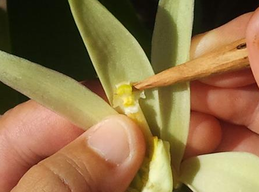
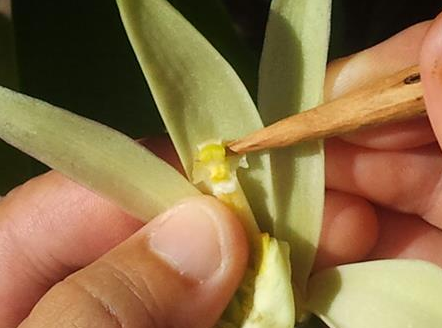

Unsere Bourbon-Vanille
Bourbon-Vanille stammt ursprünglich nicht von der Insel Bourbon (heute Réunion), sondern aus Mexiko. Dort wurde die Pflanze von den Totonaken und später den Azteken genutzt. Sie wächst ursprünglich in tropischen Regenwäldern als Kletterorchidee. Die Bezeichnung „Bourbon-Vanille“ bezieht sich heute auf Vanille die zu 80% aus Madagaskar stammt. Weitere Anbaugebiete sind Komoren, Réunion, Mauritius und den Seychellen. Die Bezeichnung „Bourbon-Vanille“ bezieht sich heute auf Vanille die zu 80% aus Madagaskar stammt. Weitere Anbaugebiete sind Komoren, Réunion, Mauritius und den Seychellen. Der Name „Bourbon“ wurde 1964 eingeführt, um die Vanille von diesen Inseln zu unterscheiden. Sie gilt als besonders aromatisch.
Die größte Herausforderung: Bestäubung. In Mexiko übernehmen das spezielle Melipona-Bienen oder Kolibris. Anderswo gibt es diese Bienenart nicht. Die Bestäubung erfolgt meist morgens, durch erfahrene Arbeiter mit einem Holzstäbchen oder Bambussplitter auschließlich per Hand und ist erforderlich, damit sich eine Vanilleschote bilden kann. Die Bestäubung der Blüte muss schnell erfolgen, da siese nur eine Blütezeit von einem Tag hat.
Nach erfolgreicher Bestäubung bildet sich eine grüße Kapsel, ähnlich vom aussehen wie eine lange grüße Bohne, die dann als Vanilleschote bezeichnet wird. Die Vanilleschote benötigt bis zur Ernte ca. 6 bis 9 Monate. Geerntet wird sie allerdings noch vor der Reife, wenn die schoten noch grün sind. Wenn die Schoten zu spät geerntet werden, platzen diese auf und verlieren an Qualität.
Die Ernte erfolgt ausschließlich per Hand und hierbei ist der Zeitpunkt entscheidend. Die Spitze der Schote muss leicht gelblich sein. Nach der Ernte wird werden die Schoten kurz in heißem Wasser getaucht um die Fermentatation zu stoppen. Anschließend werden die abgebrühten Schoten in Tüchern oder Holzkisten über mehrere Tage gelagert. Zu diesem Zeitpunkt entsteht auch das einzigartige Aroma der Bourbon-Vanille. Anschließend wird die Vanille erst in der Sonne und anschließend im Schatten üner 4 bis 6 Wochen getrocknet, bis die Vanille einen Feuchtigkeitsgehalt von ca. 25-30% hat. Sobald dieser Feuchtigkeitsgehalt erreicht wurde, werden die Schoten nach Länge, Aussehen und Aroma sotiert und in geschloßenen Kisten für 2-3 Monate gelagert um das Aroma zu verdichten. Diesen Schritt nennt man auch Aromaverdichtung.
Die Merkmale echter Bourbon-Vanille ist die dunkelbraunen bis schwarze Farbe der Schote. Sie ist Ölig gläzend, biegsam, nicht spröde und hat ein intensives süßes, leicht rauchiges Aroma. Sie enthält über 200 Aromastoffe unteranderem das lecker richende Vanillin. Dies ist zu ca 1,5 bis 2,5% pro Schote enthalten. Weitere Aromen sind Eugenol, Anisaldehyd, Furfurol usw. Neben Zucker entält eine Schote auch fette und ätherische Öle. Nice to know: Die kleinen schwarten Punkte sind die Samen.

 
